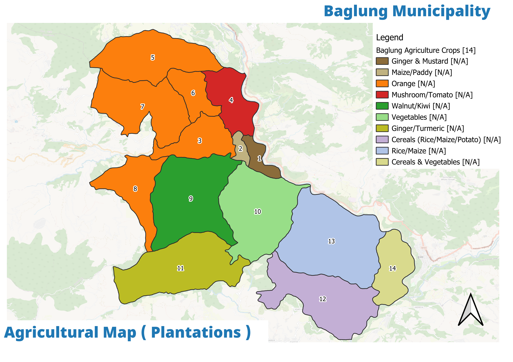

Six sectoral plans — social, physical, economic, environmental, financial and institutional — plus the tourism proposal, the MSIP investment programme and the detailed project reports.
Each sector was analysed through a Problem→Objective→Alternatives→Risk (LFA) tree before committing to projects. The plans link through a shared development concept and an investment programme.
Agriculture remains the hill economy, but it is ageing in place. The plan makes hill farming productive with market links while pushing employment into trade, construction and tourism.
Map — Tourism assets The Shaligram Museum / spiritual–wellness hub and the Bhakunde (Ward 10) homestay circuit anchor the tourism strategy.
Shaligram spiritual & wellness hub
A priority-A proposal worth NPR 5–7 crore, combining the sacred Shaligram stone heritage with a wellness economy.
Bhakunde (Ward 10) homestay & one-day circuit
A homestay and one-day tourism route strategy in the hill ward — an attempt to put the emptying hills on the tourist map and give households an income anchor.
Agricultural processing
An orange-family agro-processing unit for wards 5, 6, 7, and high-value crop identification ward-by-ward from the field ideas notes.

Agriculture & plantation map
The mapping of agricultural land and plantation wards — the basis for the high-value crop and processing proposals.
Financial & investment
The money and the MSIP
The plan is only as good as its financing. The FDP sets the municipal fiscal picture, and the Multi-Sector Investment Plan (MSIP) links projects to phased funding.
Line
FY 2082/83
FY 2083/84
Total municipal budget
NPR 130.96 crore
NPR 114.95 crore
Capital share
33.8%
—
Internal revenue + bank
—
NPR 18.0 crore
Revenue sharing
—
NPR 15.55 crore
Federal grants
—
NPR 78.22 crore
Provincial grants
—
NPR 3.17 crore
Local/shared share
—
≈29.2%
Debt note. The FDP records the Davgara Bus Park TDF debt of NPR 3.50 crore per year — a material constraint on the municipal investment envelope.
The MSIP (Multi-Sector Investment Plan) links projects from all six sector plans to a phased, multi-sector funding matrix across the three IUDP phases. It is spelled out alongside the detailed project reports (DPR) for the priority investments, including the Shaligram hub, the Bhakunde homestay circuit and the road/drainage works.